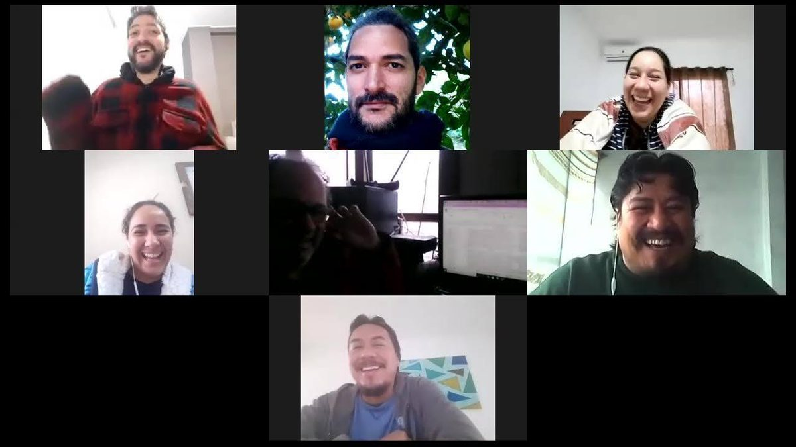
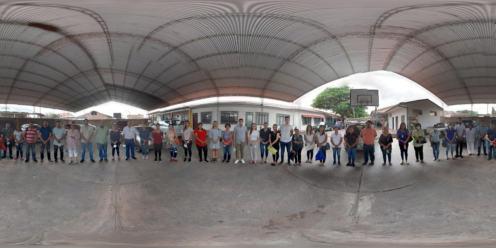
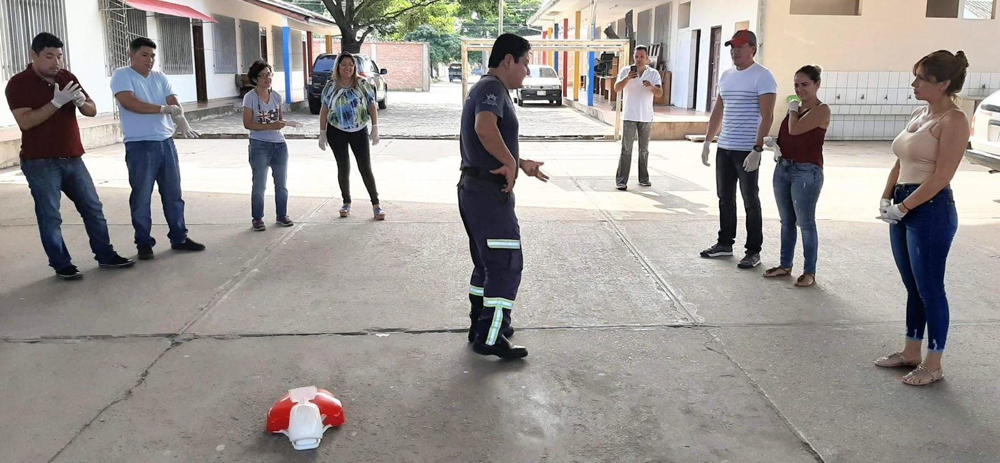

Registro de gestión · Septiembre 2019 – Marzo 2021 · Santa Cruz de la Sierra
El teléfono que nunca dejó de sonar
Soy Alejandro Sosa Briceño. Entre 2019 y 2021 diseñé y dirigí la Línea Abierta Vecinal, el primer call center ciudadano 24/7 de Santa Cruz de la Sierra. Esta es la historia de cómo un producto mínimo viable con un solo teléfono terminó sosteniendo a la ciudad durante su peor crisis sanitaria, contada con los números reales de esos 18 meses.
Cómo empezamos
De un producto mínimo viable a la línea de emergencia de toda una ciudad
La LAV no nació como plan de contingencia para una pandemia. Nació como un experimento pequeño: una línea gratuita para que el vecino pudiera reportar lo que le pasaba en su cuadra y alguien, del otro lado, hiciera seguimiento hasta resolverlo. Lo que sigue es cómo escaló, línea por línea, hasta convertirse en la columna vertebral de la respuesta municipal al COVID‑19.
Primera llamada recibida MVP
Así nació la Línea Abierta Vecinal: como un producto mínimo viable, sin la infraestructura ni el equipo que llegaría a tener después. Empezamos a escuchar a la ciudad con lo mínimo indispensable.
Pasamos a estado beta de producción
El MVP demostró que había una necesidad real detrás. Formalizamos procesos, formularios de registro y la coordinación con las unidades municipales que resolvían cada tipo de caso.
Primera llamada atendida en modo teletrabajo Antes del decreto
Recibimos nuestra primera llamada con un receptor trabajando desde su casa días antes de que se decretara la cuarentena en Bolivia. No lo planeamos como respuesta al COVID‑19; cuando la pandemia llegó, ya sabíamos operar así.
De 10 horas al día a cobertura 24/7 365 días al año
Pasamos de atender al público diez horas diarias a sostener la línea las 24 horas, los siete días de la semana. Durante 388 días gestionamos la pandemia sin interrupciones, con un promedio de 138 casos COVID diarios y picos de hasta 1.500 llamadas recibidas en un solo día, en cada hito situacional de la ciudad.
Cuando empezó la pandemia nos enviaron a todos a casa. Por un momento pareció que la LAV moriría justo en el momento de mayor necesidad de la ciudad. La sostuvimos gracias al apoyo del equipo de tecnología de la alcaldía y a la voluntad política de seguir operando. Ese equipo nos permitió conectarnos a la línea 800 desde nuestros propios celulares usando Skype, la aplicación que la alcaldía ya usaba internamente para las comunicaciones entre oficinas, y que de un día para otro pasamos a aprovechar para atender la línea desde cualquier lugar del mundo. Nos apoyamos en formularios de Google y hojas de cálculo de Google para manejar los cientos de casos diarios que escalaban rápidamente cada semana. No podíamos usar el sistema interno de la alcaldía, así que desarrollé justo el sistema que necesitábamos para coordinarnos entre receptores, analistas y coordinadores sin detener la atención ni un solo día. Siempre fue, ante todo, un trabajo de red humana y de voluntad: la parte tecnológica nunca fue la dificultad.
"Mi trabajo siempre ha sido aprovechar la tecnología para impulsar soluciones a problemas humanos, de comunicación y de acuerdos."
— Alejandro Sosa BriceñoQuiénes somos
Una cara amable para recibir un reclamo, y seguimiento hasta que el vecino queda conforme
La Línea Abierta Vecinal provee ayuda inmediata a la ciudadanía de Santa Cruz de la Sierra a través de su línea telefónica gratuita 800‑125‑700 y de Messenger. Canalizamos reclamos y peticiones con el organismo competente, e hicimos seguimiento de cada caso hasta lograr la satisfacción del vecino. También dábamos información sobre direcciones, trámites y funciones de unidades municipales.
Con el histórico de llamadas construimos análisis de datos útiles para el gobierno municipal: por ejemplo, definir una agenda idónea de poda a partir de las zonas que sufrían más cortes eléctricos o caída de árboles por vientos fuertes. Y dentro del COVID‑19, apoyamos al COEM en ubicación, control, contención y seguimiento de casos positivos, sus contactos y sospechosos, con una red de médicos que hacía triaje telefónico, verificación de datos para entrega de alimentos y medicamentos, y rutas óptimas para su distribución.
Mi misión fue simple de enunciar y difícil de sostener: escuchar con criterio lo que la ciudadanía manifestaba, servir de interlocutor entre el vecino y la instancia que debía responder, y sensibilizar a los servidores públicos de cada secretaría para que se sumaran como colaboradores en la atención de los vecinos.

El equipo humano
De 7 a 100 operadores, sin salir del presupuesto que ya existía
Al cierre de mi gestión el equipo estaba compuesto por 29 personas: 18 receptores, un grupo de analistas que se responsabilizaban por cada caso, un coordinador de casos médicos, un coordinador de personal y un director. En el pico de la demanda llegamos a tener 100 receptores distribuidos a lo largo de las 24 horas del día. El mínimo operativo para sostener la línea era de 10 personas repartidas en el día; el máximo posible, 120, estaba limitado únicamente por las 30 líneas telefónicas de acceso disponibles.

Reciben y registran
- Atienden la línea gratuita y toman los datos del vecino y su situación
- Proveen información sobre trámites y funciones municipales
- Turnos de seis horas, cubriendo 24/365
- Se organizan en subgrupos para contingencias y campañas
Gestionan la resolución
- Coordinan la respuesta con instituciones, empresas y sociedad civil
- Verifican el cierre del caso y la conformidad del vecino
- 4 coordinadores de turno fijo + 2 transversales
- Reunión diaria a las 7:45 a.m. para revisar pendientes
Ordenan los datos
- Limpian y organizan los registros de cada llamada
- Espacializan los datos y trazan rutas de atención
- Generan los informes y las estadísticas
- Reorganizan al equipo según la contingencia del día
Sostiene el sistema
- Vela por el funcionamiento de la infraestructura
- Recibe y escala las contingencias institucionales
- Define estrategias a partir de las estadísticas
- Coordina la operación completa del call center

Formar gente fue tan importante como construir el software. Entrenamos a servidores de distintas secretarías para que pudieran atender al vecino desde su propio puesto de trabajo, desde la LAV o desde la seguridad de su hogar.
Ese diseño remoto nos permitió sumar a personas con movilidad reducida, mayores de 65 años y personas que estaban superando un cáncer, trabajando todas ellas en sus horarios de forma impecable, de lunes a domingo. No fue solo continuidad operativa: fue una oportunidad laboral concreta dentro de una ciudad más justa e inclusiva.
Los números
52.500 casos, un vecino a la vez
Cada fila de esta sección es un tipo de reclamo real que atendimos, con su tasa de resolución real. La dejo sin maquillar: donde el porcentaje es bajo, cuento también por qué.
Cuando la línea de reclamos se volvió una red de auxilio médico
Nada en el diseño original de la LAV anticipaba una pandemia. Cuando llegó, la misma estructura que atendía luminarias y árboles caídos se convirtió, en cuestión de semanas, en el canal por el que la ciudad pedía auxilio médico, comida y contención.
Desde sospechas de contagio hasta auxilios médicos: trabajamos junto a la dirección de salud de la alcaldía, la Cruz Roja y los centros médicos de 1er, 2do y 3er nivel. Agendábamos llamadas diarias con cada persona durante todo su período de contagio, contando con una red de médicos que ofrecía consultas telefónicas y hacía triaje para una toma de decisiones más precisa. Recibimos un promedio de 10 casos diarios, con picos de más de cien casos y cerca de veinte emergencias médicas al día en los momentos más difíciles: 12.802 registros desde el 19 de marzo de 2020, con un 98,2% de los casos atendidos.
En paralelo sostuvimos la donación de alimentos: verificamos datos para la entrega y trazamos rutas óptimas de distribución para la canasta básica que organizó la alcaldía. Ahí recibimos nuestro mayor volumen de toda la LAV, 13.106 registros, con un promedio de 18 casos diarios y picos de más de doscientos. La brecha entre casos abiertos y cerrados en esta categoría fue real: una imposibilidad material de atenderlos a todos. La alcaldía organizó donaciones masivas y buena parte de la ciudadanía también se volcó a apoyar, pero la cantidad de familias pidiendo alimentos superó lo que empresas privadas, alcaldía y población en conjunto podían cubrir; en el 98% de esos casos, lo que sí podíamos ofrecer de inmediato era información clara sobre los bonos disponibles.


Los retos, sin maquillar
No todo se resolvió, y eso también hay que contarlo
Cerrar una gestión con números altos es fácil de contar; cerrarla explicando los números bajos es lo que la hace útil para quien venga después. Estos son los tres tipos de límite con los que me topé.
Construcciones ilegales
Solo 13,8% de los casos quedó atendido. Muchas construcciones que afectaban a un vecino concluían antes de que SEMPLA pudiera intervenir, a pesar de la petición de detener la obra. Legalmente, esos casos solo podían resolverse en un litigio civil: ahí la alcaldía perdía la posibilidad de intervenir.
Limpieza de canales y drenajes
Apenas 20% de los casos cerrados. La limpieza de canales se ejecutaba bajo una agenda propia que no siempre coincidía con el momento en que el vecino esperaba una respuesta, y esa falta de sincronización dejó muchos casos sin poder confirmarse semanas después.
Donación de alimentos y bonos
21,7% y 26,9% de cierre formal: una imposibilidad material de atender a todos. La cantidad de familias pidiendo alimentos y apoyo económico superó lo que la alcaldía, las empresas privadas y la propia población, que también se volcó a donar, podían cubrir juntas.
"Algunos casos requieren imaginación para llevarlos a buen término. Como cuando un vecino pidió deshacerse de un enjambre de abejas y terminamos llamando a la Asociación de Apicultores de Santa Cruz, con apoyo de Bomberos y Alumbrado Público para llegar hasta la reina."
— Sobre lo que no entra en ninguna categoríaReconocimiento
Nada de esto se sostiene solo
La LAV se diseñó y operó bajo la gestión del entonces alcalde Percy Fernández, y durante buena parte de ese período conté con el respaldo directo de la alcaldesa interina Angélica Sosa, cuyo apoyo fue clave para sostener la operación 24/7 en los momentos más exigentes de la pandemia. A ambos, gracias por darle a este equipo el espacio institucional para actuar.
Pero el verdadero peso de esta historia lo llevó el equipo: más de 300 servidores públicos que dieron apoyo a la LAV en distintos momentos, turnándose para llegar a tener hasta 100 operadores a un mismo tiempo, a cualquiera de las 24 horas del día, con al menos un coordinador siempre detrás de esa vanguardia telefónica conectándonos con cada secretaría e institución privada. Diseñé la arquitectura; ellos la sostuvieron llamada por llamada.
Esta historia siguió después de la alcaldía
Con esta misma experiencia diseñé una propuesta para escalar el modelo a nivel departamental: un Centro de Atención Ciudadana para la Gobernación de Santa Cruz, sin presupuesto nuevo.